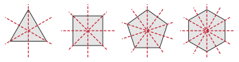

← back to the lesson
Unit 3 Summary
Unit Summary - Unit 3: Transformations - DHS Geometry
NameDatePeriod
3.1Translations
- A transformation moves a figure by a rule. The starting figure is the preimage. The new figure is the image. Point A becomes A′.
- A translation slides every point the same distance in the same direction: (x, y) → (x + a, y + b).
- Positive a moves right and negative a moves left. Positive b moves up and negative b moves down.
- To find the rule, use image minus preimage for x and for y.
- To graph an image, move every vertex and connect the new points in the same order.
- A translation keeps lengths and angles. Each side is parallel to its image. It is a rigid motion.

Example: (x − 3, y + 5) applied to P(2, −4) gives P′ = (−1, 1).
3.2Reflections
- A reflection flips a figure over a line of reflection. A point and its image are the same distance from the line.
- Over the x-axis: (x, −y). Over the y-axis: (−x, y). Over y = x: (y, x). Over y = −x: (−y, −x).
- Over x = a or y = b: count the distance to the line and go the same distance to the other side.
- The line of reflection is the perpendicular bisector of AA'. It goes through the midpoint and is perpendicular.
- A reflection is a rigid motion. It reverses orientation.

Example: reflect (3, −4) over y = −x. (−y, −x) = (4, −3).
3.3Rotations
- A rotation turns a figure about a center by an angle in a direction. Counterclockwise is positive.
- 90° clockwise is the same as 270° counterclockwise.
- About the origin: 90° is (−y, x). 180° is (−x, −y). 270° is (y, −x).
- A point and its image are the same distance from the center. For 90°, the two radii are perpendicular (slopes multiply to −1).
- A rotation is a rigid motion. It does not reverse orientation.

Example: rotate (2, 5) by 270° counterclockwise. (y, −x) = (5, −2).
3.4Dilations
- A dilation has a center and a scale factor k. About the origin: (x, y) → (kx, ky).
- k > 1 is an enlargement. 0 < k < 1 is a reduction.
- Every length is multiplied by k. Angles stay the same. Each side is parallel to its image.
- A dilation is not a rigid motion. k = image lengthoriginal length.
- Center (h, j): subtract the center, multiply by k, add the center back.

Example: dilate B(4, 2) with k = 3 about (2, 1). (2, 1) → (6, 3) → (8, 4).
3.5Sequences of Transformations and Symmetry
- A sequence does one transformation after another: A → A′ → A′′.
- Order can matter. Two translations commute, but a reflection and a translation usually do not.
- To describe a sequence, check orientation (reflection?) and size (dilation?). Test a vertex. More than one answer can be right.
- Any sequence of translations, reflections, and rotations is a rigid motion. A dilation is not.
- A regular polygon with n sides has n lines of symmetry and rotational symmetry of order n. The smallest angle of rotation is 360°n.

Example: translate (x + 3, y), then reflect over the y-axis. One rule: (−x − 3, y).